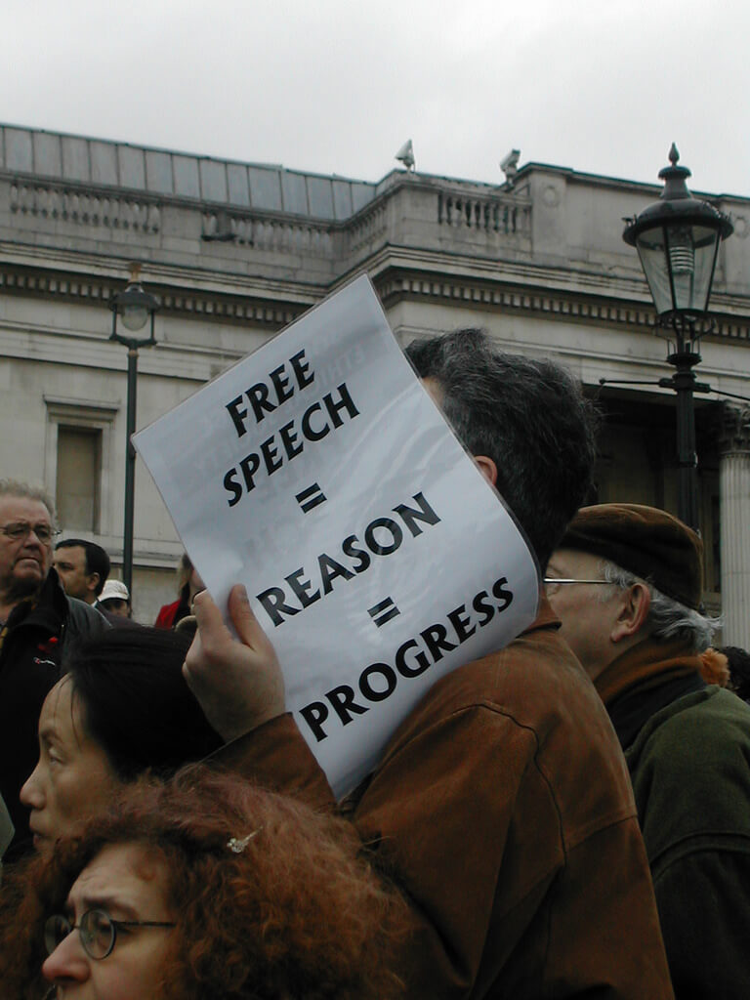

Unit 5 Free Speech and its Limits

Man with a poster of free speech. Photo Credit: flickr photo by sjgibbs80
Overview
Welcome to Unit 5. In this unit we are turning our attention to the ethics of free speech and expression. You have probably noticed how deeply people value and appreciate the right to free speech. Many, in fact, would believe they, and their society, had lost something profoundly important if they ever lost this right. In many countries, the right to free speech is seen as one of the foundations of society, as virtually an unquestioned cultural assumption. Those who dare to challenge, or even question, it do so at their peril. In other words, it is a foundational right upon which we base many other rights. Perhaps you’ve wondered why this is so and how things got to be this way. How did the right to free speech gain such an elevated standing in people’s minds? Moreover, should it ever be limited or is it simply an absolute principle with no exceptions? If it should be limited, when, and why? What could possibly be so important that it would call for a limitation on one’s free speech?
Let’s begin by exploring our own personal views on the matter. Suppose someone you know believes something with which you and many of your friends flatly disagree. Should they have the right to express this belief? Most of us would probably answer, yes, to this question. What, however, if you and your companions don’t simply disagree with this viewpoint but actually find it disturbing? Should the right to free speech and expression still hold? Suppose it’s worse than that. Suppose you, and plenty of people you know, actually find this viewpoint disgusting? What then? Should the person still be given the right to express this view? One last ‘what if’ question: what if you believe the expression of this viewpoint would be genuinely dangerous to some person or group of people in your society? Does the right to free speech guarantee their right to express the view even in this case?
The point of these ‘what if’ scenarios is to test our views on this right and to raise a critical question for this unit: how far does the right to free speech go? We will see that this question cannot be answered without first establishing the basis for free speech in the first place. Notice that our basis for free speech cannot simply be that the government decrees this right, since the very question at stake is what moral basis governments have doing so. Our readings for this unit will expose us both to a proposed moral foundation for the right to free speech and a case for certain limitations to be placed upon it. Once we understand the arguments made for both, we will be in a position to reflect on them and decide whether we would draw the lines in different places than these authors have.
Topics
This unit is divided into two topics:
- A Moral Foundation for Free Speech
- Pornography and Limits on Free Speech
Learning Outcomes
When you have completed this unit, you should be able to:
- Explain John Stuart Mill’s four grounds for the freedom of expression.
- Describe limitations on freedom of expression suggested by John Stuart Mill and his rationale for such limits.
- Discuss why some who still favour freedom of speech believe pornography should not be freely distributed.
- Show how John Stuart Mill’s Harm Principle is foundational to the question of when and why limits should be placed on free speech.
Activity Checklist
Here is a checklist of learning activities you will benefit from in completing this unit. You may find it useful for planning your work.
A Moral Foundation for Free Speech
Is free speech merely a personal preference, something we happen to like or prefer? Or is something we have a genuine moral right to possess? If so, it will require a moral basis, a set of reasons for thinking our society ought to have and protect this right. Furthermore, if we don’t know why we ought to have this right, we also have no way of deciding if, when, or why it should ever be limited. Once its basis is known, we can then consider whether a certain practice or idea would constitute an exception to this basis or go beyond its mandate. Our first reading by John Stuart Mill, a nineteenth-century British philosopher who is sometimes referred to as the apostle of liberty, sets out a classical foundation for the right to free speech. In this classical article, Mill argued that minority views in a society must be given the right to be expressed, whether people believe they are true or false, and that we are all worse off if they are restricted. It will be important for us to catch Mill’s reasons for this position because they will be useful in answering the follow-up question, namely, should free speech ever be limited.
Learning Activities
Read, View and Reflect
In the first activity, you are asked to read John Stuart Mill’s article on free speech and its limits in pages 252-268 of your textbook, Readings in Moral Philosophy by Jonathan Wolff. As you read, take notes in your Learning Journal, defining key terms and explaining key concepts. Next, choose from the following videos to learn more about key terms from this topic.
Pornography and Limits on Free Speech
If we agree that the right to free speech has a sound moral basis, does this mean it is an absolute right with no exceptions? Or could there be certain limitations placed on it even while maintaining it as a genuine right? In other words, how far does this right go? If certain limitations are legitimate, what are they and what basis could be given for them? Disagreement appears to be a weak basis for limiting free speech. The fact that some people disagree with something you or I believe hardly seems like a proper reason to limit our free expression of that belief. Virtually every view point has its detractors and if we followed this principle consistently, it would lead to the collapse of the right to free speech. If, however, disagreement does not constitute a good reason for limiting free speech, then what does? In our second reading, we turn to this question. Catherine MacKinnon, an American lawyer and activist, presents us with a case in which she believes free speech ought to be limited, namely, pornography. She will argue both that free speech is important but that it should be limited in this one case. It will be important for us to follow her argument for both claims and consider our own stance toward them.
Read, View and Reflect
Read the article by Catherine Mackinnon on pornography, civil rights, and free speech, in pages 268-278 of your textbook, Readings in Moral Philosophy, by Jonathan Wolff. As you read, take notes in your Learning Journal, defining key terms and explaining key concepts. Next, choose from the following videos to learn more about key terms from this topic.
Controversial Speaker Case Study
Read and analyse the following case study. A controversial person is coming to your community planning on giving a public lecture in the community hall.The event which has been widely publicized has drawn protests from those who are petitioning the organizers to cancel the event. They argue that this speaker’s views are offensive and should be neither tolerated nor even publicly expressed. From the course readings, how do you think John Stuart Mill would respond if he were one of the organizers? Tell why you believe he would respond this way. Do you agree with him? Why or why not?
Note that you may be asked to review this case or similar cases in your class discussion groups. You may want to prepare by relating the case to your readings. Specifically, identify the ethical issues and terms to help explain the case.
Activity : Key Terms Quiz (ungraded)
In order to review some of the major concepts from the text, take the following unmarked quiz. Although you will not be evaluated on these terms, they will assist you in the assignments for this course. Match the following terms to their correct definition.
Assessment
Assignment: Ethics Committee Response (10%)
After completing this unit, including the learning activities, you are asked to meet with your Ethics Committee and complete the following:
Produce a one-page report stating, first, what you believe to be the moral basis/foundation for freedom of speech, and, second, any examples where free speech should be limited. Thirdly, provide your rationale for each example of a limitation and show how it still fits with your stated foundation for free speech.
As you collaborate on this assignment, be sure to refer to the grading criteria in the Assessments section of this course. Submit your report on Moodle by the end of the week.
Ethics Video Assignment: Choose Your Topic (15%)
For this assignment, you’ll be asked to create a 2 minute video articulating a moral viewpoint on one of the following issues: free speech, sexual morality, abortion, euthanasia, or torture. Then, drawing upon the readings, make a concise case for this viewpoint.
Your video must include the following elements:
- A clear statement of the ethical issue being addressed: what is the ethical question at hand?
- Your proposed answer to this question.
- At least one reason for your answer.
- A professional and well-prepared appearance to the video as a whole:
this may require rehearsing it once or twice. This video must be posted on Moodle by the end of week 9. If you choose to post it online outside of Moodle (e.g. YouTube), please provide the URL.
You will write 3 posts (150 words each) responding to three videos presented by your classmates, stating your agreement or disagreement with the arguments in the video, and explaining why you agree or disagree.
Checking your Learning
Before you move on to the next unit, you may want to check to make sure that you are able to:
- Explain John Stuart Mill’s four grounds for the freedom of expression.
- Describe limitations on freedom of expression suggested by John Stuart Mill and his rationale for such limits.
- Discuss why some who still favour freedom of speech believe pornography should not be freely distributed.
- Show how John Stuart Mill’s Harm Principle is foundational to the question of when and why limits should be placed on free speech.